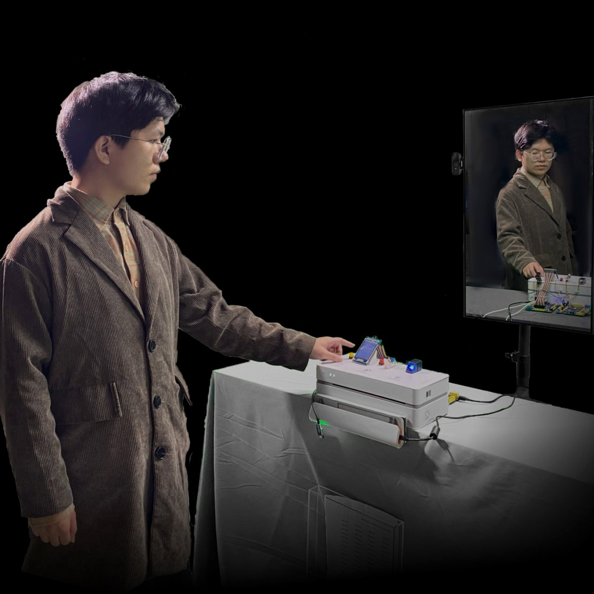

Selected Work
Four projects spanning medical hardware, critical installation, computer vision, and accessibility.
 View case →
View case →
AI+Acupuncture
A smart medical device using EMG sensing and computer vision to detect the "de-qi" sensation in real time — bringing TCM into a feedback loop with AI.

View case →Data Feeder
A critical installation about giving up identity to algorithms. Visitors print their personal data, feed it to a machine, and watch their reflection turn into someone else.
 View case →
View case →
Sleepwalker Autopilot
A vision-guided autopilot for sleepwalkers. Detects hazards in real time and gently nudges the wearer back to safety — without ever waking them.
 View case →
View case →
Emora
An AI accessibility companion for blind users. Multi-modal — turns ambient surroundings into spoken, emotionally-aware descriptions. Built around real Lighthouse community needs.